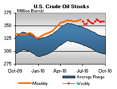

Released on September 29, 2010
(Next Release on October 6, 2010)
Canadian Crude Oil Imports: Increasing Importance to the United States
U.S. consumers are sometimes surprised to learn that our single largest foreign source of crude oil is Canada, which surpassed Saudi Arabia as the leading supplier to the United States in 2004 and has continued to hold that position. Since 1990, total U.S. crude oil imports from Canada have increased by 1.3 million barrels per day, accounting for 40 percent of the 3.1 million barrel per day growth in total crude oil imports since that date. Over the last decade alone, the share of U.S. crude oil imports coming from Canada has increased from 13 percent to 22 percent.
From January through June 2010, 2.0 million barrels per day of Canadian crude oil were imported into the United States, of which 1.2 million barrels per day went into the Midwest. According to the Canadian National Energy Board, almost half of the crude oil exported to the United States was either synthetic crude or blended bitumen from the Alberta oil sands. Bitumen, a heavy, viscous type of hydrocarbon extracted from the oil sands, is blended with lighter hydrocarbons to allow it to flow through pipelines. It then may be upgraded into a relatively light, sweet synthetic crude oil that can be used by most refineries.
The recent shutdown of two pipelines bringing Canadian crude oil to the U.S. demonstrated the growing importance of these imports. On September 9, the Enbridge Lakehead System had to shut down its Line 6A pipeline due to a crude oil leak in Romeoville, Illinois. This incident followed the discovery of another leak and a shutdown of Enbridge’s Line 6B late in July. Line 6A is a major source of light synthetic, heavy, and medium Canadian crude oils for seven refineries in the Midwest and Pennsylvania, and many of the affected refineries have limited alternate supply sources. Fortunately for Midwest consumers, Enbridge was able to restart Line 6A on September 17 and Line 6B on September 27.
While numerous factors may have been in play, markets apparently reacted to the September 9 outage of Line 6A, as prices for benchmark West Texas Intermediate (WTI) crude oil and Midwest gasoline rose discernibly until it became apparent that the line would be returned to service quickly. WTI prices rose by $3 per barrel in conjunction with the outage despite very high inventory levels at the Cushing, OK hub. Wholesale spot conventional gasoline prices in Chicago rose by 25 cents from September 9 to 13, and EIA’s weekly retail gasoline survey reported on September 13 that Midwest regular gasoline had risen by over 10 cents per gallon during the week, while the national average was up just 4 cents per gallon during the same period.
Prices returned to prior levels after the restart of Line 6A and the price impact of this incident was mitigated by the fact that the outage occurred as gasoline demand began showing seasonal declines and refineries were going into their planned autumn maintenance schedules with the available buffer of high crude oil and refined product stocks.
Both Retail Gasoline and Diesel Prices Decline
After three weeks of static or increasing prices, the U.S. average retail price for regular gasoline decreased 3 cents from last week to $2.69 per gallon but was still $0.20 per gallon higher than last year. Prices were down throughout the country with the East Coast and West Coast each falling a cent to $2.63 per gallon and $2.95 per gallon, respectively. (California prices declined a penny to $3.00 per gallon.) The Midwest plummeted seven cents to $2.68 per gallon, recording the largest price decrease. The Gulf Coast price remained the lowest in the Nation after dropping over 2 cents to $2.56 per gallon and the Rocky Mountain average fell 2 cents to $2.81 per gallon.
Retail diesel fuel prices slumped a penny to $2.95 per gallon, $0.35 per gallon above last year. With the exception of the West Coast, all major regions recorded a price drop. The East Coast stayed at $2.95 per gallon even though the price was down a fraction of a cent. The Midwest price was lower by more than a penny to $2.93 per gallon and the Gulf Coast average fell about a cent to $2.88 per gallon. The Rocky Mountain region tallied the largest price decrease, losing more than two cents to end at $3.01 per gallon. West Coast prices were the highest in the country but remained flat at $3.12 per gallon after a negligible increase. California prices decreased one cent to $3.14 per gallon.
Propane Posted Slight Drop
Propane stockholders reported a slight decrease in inventories of 0.3 million barrels causing inventories to drift nearer to the lower boundary of the average range for this time of year. Last week’s stock drop moved total propane inventories to an estimated 63.4 million barrels as of September 24, 2010. Regional inventories declined 0.1 million barrels on both the East Coast and in the Midwest. The Gulf Coast region was down by 0.2 million barrels. The combined Rocky Mountain/West Coast region showed a small increase during this same period. Propylene non-fuel use inventories dropped by 0.1 million barrels and accounted for a 3.9 percent share of total propane/propylene inventories.
Text from the previous editions of This Week In Petroleum is accessible through a link at the top right-hand corner of this page.
| Retail Prices (Cents Per Gallon) | |||||||
| Retail Data | Changes From | Retail Data | Changes From | ||||
| 09/27/10 | Week | Year | 09/27/10 | Week | Year | ||
| Gasoline | 269.4 | Diesel Fuel | 295.1 | ||||
| Spot Prices (Cents Per Gallon*) | |||||||||||||||||||||||||||||||||||
|
|||||||||||||||||||||||||||||||||||
| *Note: Crude Oil WTI Price in Dollars per Barrel. | |||||||||||||||||||||||||||||||||||
| Stocks (Million Barrels) | |||||||
|  | |||||||
 |
|||||||
| Stocks Data | Changes From | Stocks Data | Changes From | ||||
| 09/24/10 | Week | Year | 09/24/10 | Week | Year | ||
| Crude Oil | 357.9 | Distillate | 173.6 | ||||
| Gasoline | 222.6 | Propane | 63.400 | ||||